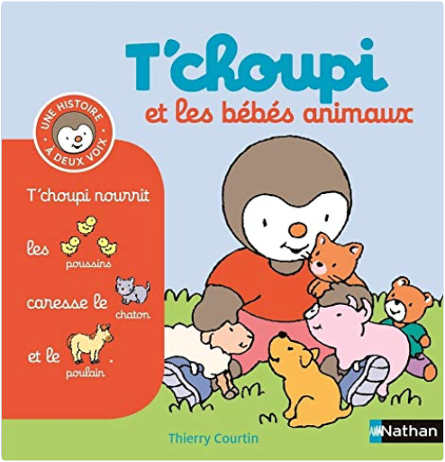
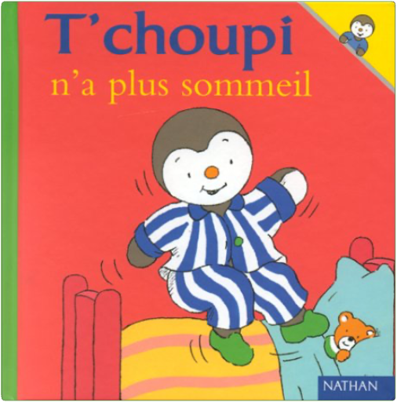
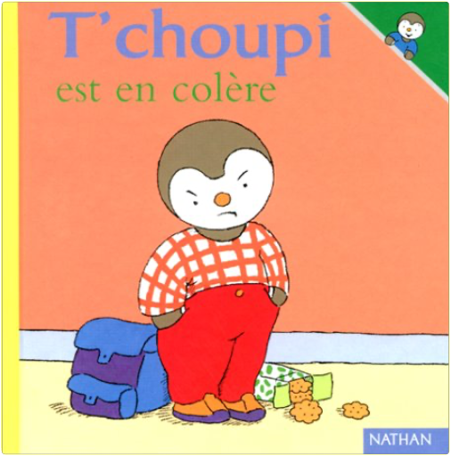
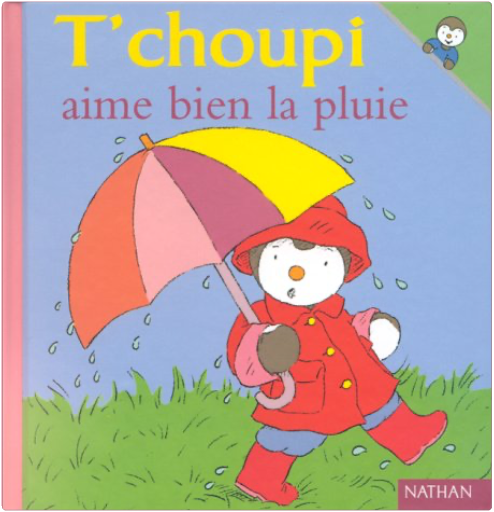

Julien
Collection Total:
2 100 Items
Last Updated:
Feb 15, 2025
Shelf:
Books
Movies
Albums
Videogames
Games
BD
BD Camille
Blu-ray
Business
Camille
Comics
Cooking
Lego
Manga
Pauline
Photography
Sport
Star Wars
T'choupi
Travel
TV Shows
Un livre dont vous êtes le héro
Vinyl
Walt Disney
14
15
16
17
18
T'choupi, histoire à deux voix, tome 17 : a de nouveaux habits
Thierry Courtin
2092558080

T'choupi, histoire à deux voix, tome 18 : et les bébés animaux
Thierry Courtin
2092574566
T'choupi, histoire à deux voix, tome 19 : prend soin de la planète
Thierry Courtin
209259415X
T'choupi, histoire à deux voix, tome 20 : au poney club
Thierry Courtin
2092491679
T'choupi, histoire à deux voix, tome 21 : et les émotions
Thierry Courtin
2095013999
T'choupi, histoire à deux voix, tome 22 : Champion de sport
Thierry Courtin
T'choupi, tome 1 : veut un chaton
Thierry Courtin
2092020269
T'choupi, tome 2 : ne veut pas prêter
Thierry Courtin
2092020242

T'choupi, tome 3 : n'a plus sommeil
Thierry Courtin
2092020218
T'choupi, tome 4 : jardine
Thierry Courtin
T'Choupi Jardine
209202020X
T'choupi, tome 5 : fait du vélo
Thierry Courtin
2092020226
T'choupi, tome 6 : est trop gourmand
Thierry Courtin
2092020250

T'choupi, tome 7 : est en colère
Thierry Courtin
2092020234

T'choupi, tome 8 : aime bien la pluie
Thierry Courtin
2092020277
14
15
16
17
18

 Made with Delicious Library
Made with Delicious Library